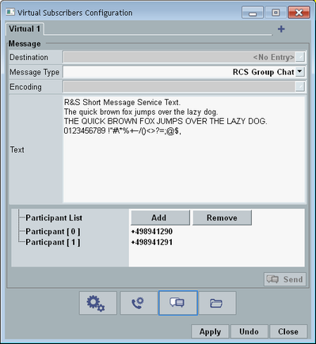

Incoming mobile-originating messages sent from the DUT to a virtual subscriber are displayed in the main view, see "Event Details".
Mobile-terminating messages to be sent to the DUT are configured and initiated via the "Virtual Subscribers Configuration" dialog box. Press the "Virtual Subscriber" hotkey to open the dialog box.
The dialog box provides several views. This section describes the view shown in the following figure. The highlighted button selects this view for display.

Selects the destination to which the message is sent.
Remote command:Selects the type of the message to be sent to the DUT.
The types belong either to the short message service (SMS, defined by 3GPP or 3GPP2) or to the rich communication suite (RCS, defined by GSMA).
For RCS, option R&S CMW-KAA21 is required.
"3GPP" | SMS as defined by 3GPP |
"3GGP2" | SMS as defined by 3GPP2, no delivery acknowledgment |
"3GGP2 with Delivery ACK" | SMS as defined by 3GPP2, with delivery acknowledgment |
"3GPP Generic SMS" | SMS with definition of the already encoded message. The text field defines the contents of the entire data unit (RPDU) via hexadecimal characters. |
"RCS Pager Mode" | RCS standalone message in pager mode |
"RCS Large Mode" | RCS standalone message in large message mode |
"RCS 1 to 1 Chat" | RCS 1 to 1 chat, initial message of the session |
"RCS Group Chat" | RCS group chat, initial message of the session |
Selects the encoding for RCS messages (pager mode and large mode).
RCS messages can be sent with Base64 encoding or as plain text without encoding.
Option R&S CMW-KAA21 is required.
Remote command:Specifies the text of the message to be sent to the DUT.
For generic SMS, it defines the contents of the RPDU via hexadecimal characters.
Remote command:Configures the participants of a group chat (only displayed for this message type).
The participant list is sent to the DUT during the session setup. During the session, you can send more messages to the DUT, using any of the participants as sender of the message (softkey "Chat Actions"). If the DUT sends a message, the delivery and display is automatically acknowledged for all participants.
Use the buttons to add or remove lines. Edit the entries directly in the dialog box.
Sends a message with the specified settings to the DUT.
The dialog box is closed automatically. You can check the message transfer in the "Events" area of the main view and at the DUT.
To send further messages in RCS chats, see "Chat Actions (softkey)".
Remote command:This button is only available for "RCS Large Mode". It imports the message text from a file.
Create text files according to your needs and store them on the samba share of the DAU, in the directory ims/rcs/samples.
Remote command: